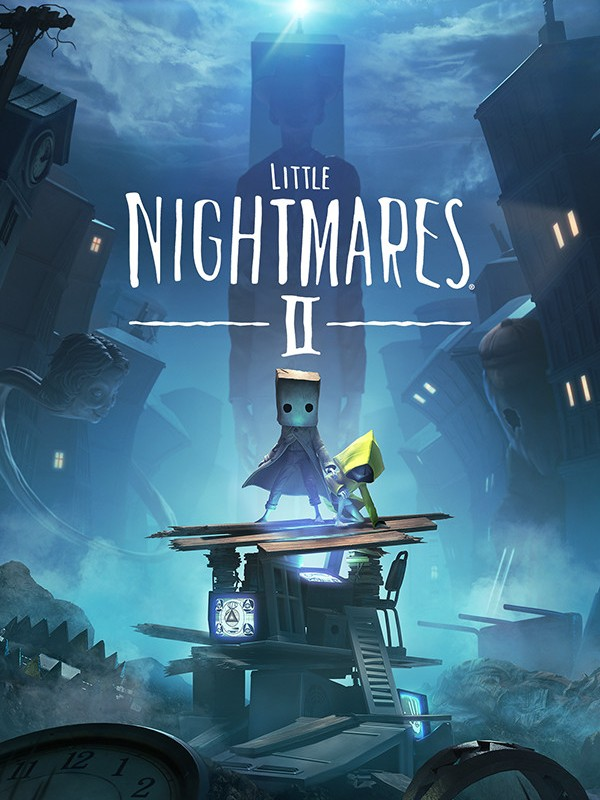

Little Nightmares II
Little Nightmares II
Details
|  | |
| Playtime | Not Played |
| Last Activity | Never |
| Added | 08/07/2025 0:26:22 |
| Modified | 08/07/2025 0:27:59 |
| Completion Status | Not Played |
| Library | Steam |
| Source | Steam |
| Platform | PC (Windows) |
| Release Date | 10/02/2021 |
| Community Score | 83 |
| Critic Score | 82 |
| User Score | |
| Genre | Adventure Platform Puzzle |
| Developer | Tarsier Studios |
| Publisher | Bandai Namco Entertainment |
| Feature | Single Player |
| Links | Twitter Official Steam GOG Wikipedia Twitch YouTube Uknown Uknown Uknown Wikia |
| Tag | |
Description
A boy wakes up alone in the woods surrounded by the husks of burnt-out televisions. After stumbling through traps and pitfalls in the wilderness, he finds a girl locked in the basement of a dark and terrible house with only a music box to keep her company.
This is their story.
WORK TOGETHER OR DIE ALONE

You play as Mono, the boy traveling with Six, his enigmatic companion. Although they never knew each other before their story began, they must find a way to cooperate as they try to survive the terrors and secrets of the Pale City.
Mono can call Six to summon her, but she is also quite independent and observant. Pay attention to her cues and work together to open hidden trapdoors, climb giant furniture, and, if you’re feeling a little scared, hold hands as you both navigate a world never meant for children.
STAY HIDDEN TO STAY ALIVE

The Residents of the Nowhere are enormous, implacable adults like the Teacher or the Hunter who stalk any child Visitor foolish enough to catch their attention. When they’re around, it’s vital to remain quiet and out of sight, or your end will be quick and unpleasant.
RUN FOR YOUR LIFE

At times, hiding won’t be enough. If a Resident is chasing you, you’ll have to run as fast as you can, clambering over any obstacles in your way. Maybe you’ll be able to stay alive long enough to find a place where the danger can’t reach you… for now.
IF YOU CAN’T RUN AND YOU CAN’T HIDE, YOU HAVE TO FIGHT

Mono is strong-willed when he has to be. If you’re trapped with an enemy, look for something you can swing to fend them off. It’s tough work for a such a little kid, so time your attacks carefully. You won’t get a chance to make the same mistake twice…
FIND THE SIGNAL

Mono is the only one who can stop the ominous Thin Man, the Resident who seems to be the source of the Signal luring him into the heart of the city. Find the courage to confront your nightmares and just maybe both Mono and Six can get out of this alive.
Good luck, little ones.